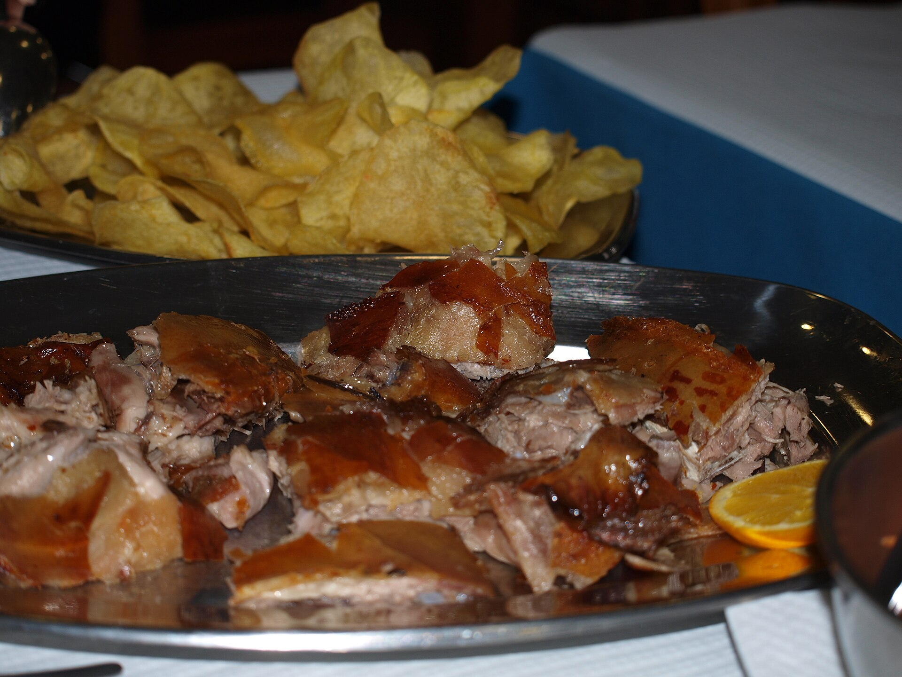
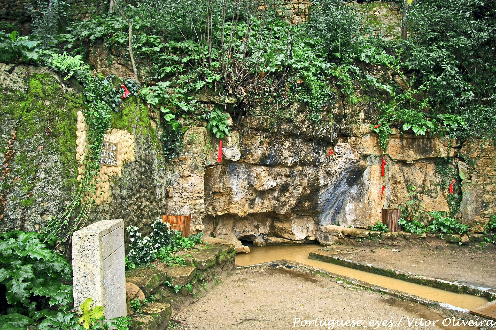

Guias
Explorar Coimbra
Guias escritos para quem vive cá e para quem está de passagem, e os lugares que não podes perder.

Roteiro em destaque
48 horas em Coimbra
Um fim de semana a pé: a Alta e a Biblioteca Joanina no primeiro dia, a Baixa e o fado à noite, Santa Clara e o rio no segundo.
- Dia 1, de manhã: a Alta e a Universidade
- Dia 1, à tarde: o Quebra Costas e a Baixa
- Dia 1, à noite: fado de Coimbra
- Dia 2: Santa Clara e o Mondego
Todos os guias
Escolhe um tema e descobre a cidade ao teu ritmo.
-
Roteiro
48 horas em Coimbra
Da Alta universitária à margem de Santa Clara: um fim de semana a pé, sem pressa.
-

Gastronomia
Onde jantar antes de um espetáculo
Restaurantes perto do TAGV, do Convento São Francisco e da Alta.
-
Universidade
Coimbra Académica
O traje, a Latada, a Queima das Fitas e a Alta, património da UNESCO.
-

Família
Coimbra com crianças
O Portugal dos Pequenitos, parques e jardins com espaço para correr.
-

Sugestões
O que fazer num dia de chuva
Museus, a Biblioteca Joanina e cafés históricos.
-

Ar livre
Passeios junto ao Mondego
Do Parque Verde à Mata do Choupal, sempre ao lado do rio.
Lugares
O que visitar em Coimbra
Monumentos, jardins e museus da Alta, da Baixa e de Santa Clara.
-
Alta
Paço das Escolas
O antigo palácio real, hoje o coração da Universidade.
-
Alta
Biblioteca Joanina
Biblioteca barroca do século XVIII. Visita com hora marcada.
-

Alta
Sé Velha
Catedral românica do século XII, palco das serenatas.
-

Baixa
Mosteiro de Santa Cruz
Onde estão os túmulos dos primeiros reis de Portugal.
-

Santa Clara
Quinta das Lágrimas
Jardins ligados à história de Pedro e Inês.
-

Alta
Jardim Botânico
Jardim da Universidade, com estufas e mata de bambu.